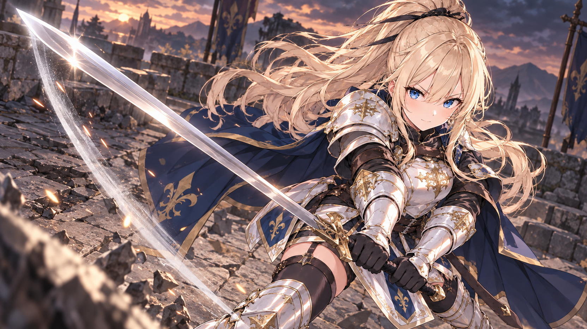

현재 세린은 베이직 나이트입니다. 두 단계는 미래·가정 연출 시안이며 경지·궁극기 습득·피해 판정을 바꾸지 않습니다. 사용자 최종 승인 대기 · 실제 전투 엔진 미등록.

신규 1664×936 · 좁은 중립 검광 · 얼굴은 원화에서 크롭
기존 1672×941 보존 · 전신과 공간의 광류 · 별도 얼굴 컷인 신규 제작
기사·마법사 60명의 궁극기 연출 설정을 확립했습니다. 생활인·일반 무예·성직·마수 103명은 각자의 대표 기술을 유지합니다. 행에 마우스를 올리면 발동 동작과 한계를 확인할 수 있습니다. 이 표는 설정 검수용이며 일반 게임의 인물 지식 공개 범위와 별개입니다.